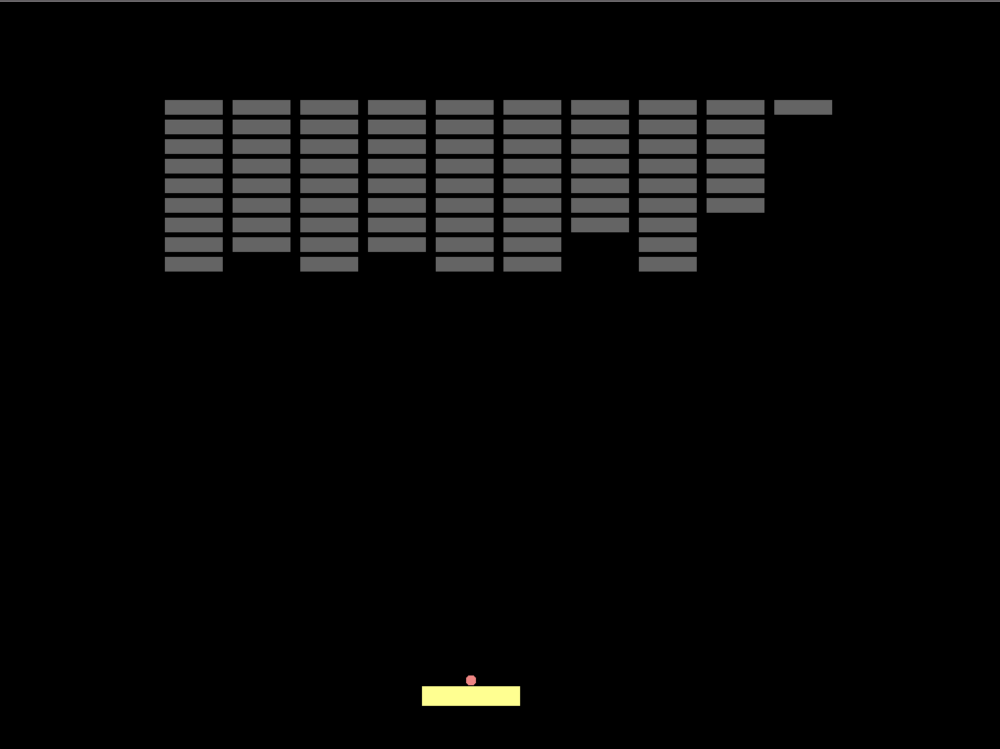

Description: Brick Out is a game consisting of a ball, a paddle, and blocks. The ball bounces off the paddle and destroys any blocks it hits. The goal of the game is to destroy all blocks. The paddle is controlled by the trackpad, and if the user misses the ball, the paddle and ball are reset.
Class: Computer Science 211 -- Fundamentals of Computer Progamming II
Language: C++
Below is a picture showing an example state of the game after some blocks have been destroyed:
Click here to download the source code: Brickout Code